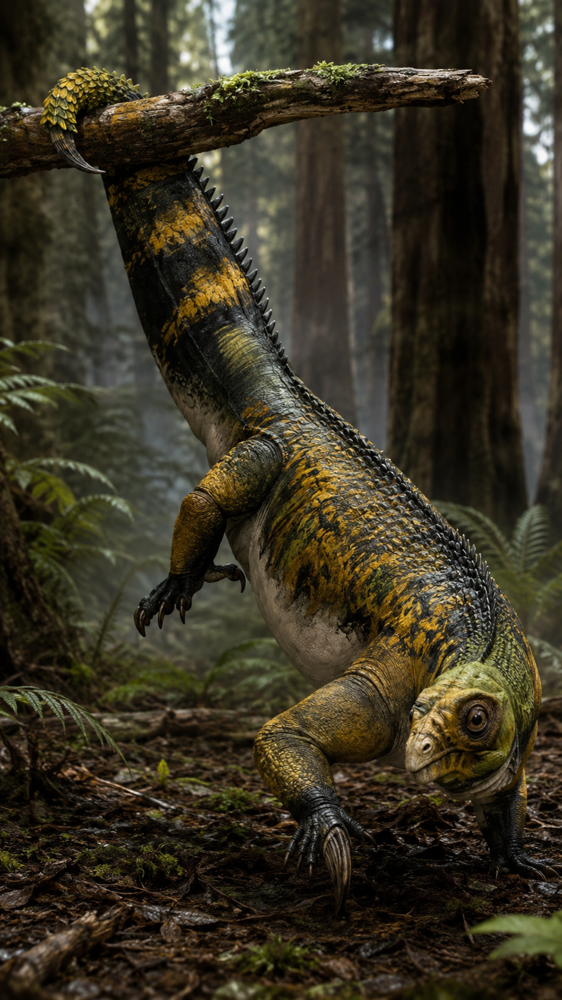
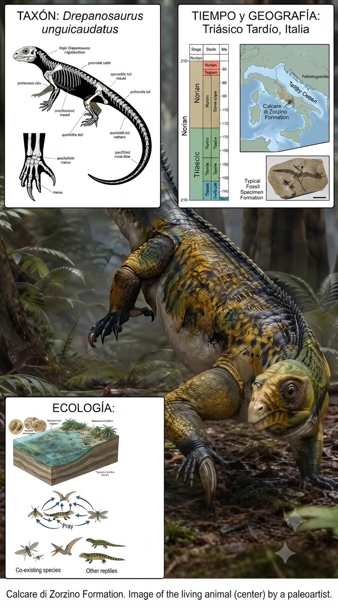
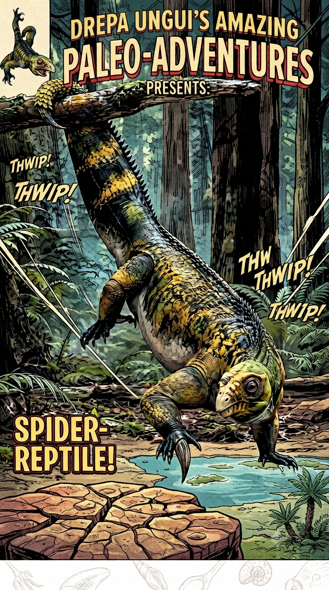
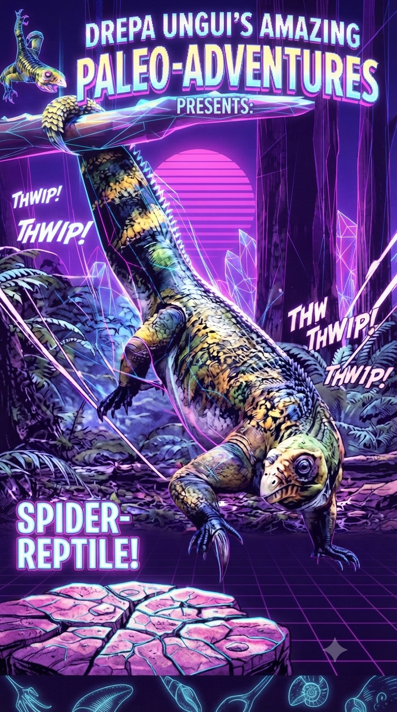

Paleoficha de PalEntropía




TAXÓN:
Drepanosaurus unguicaudatus
CLADO:
Drepanosauridae (reptiles diápsidos altamente especializados)
DIETA:
Insectívoro especializado en pequeñas presas ocultas entre cortezas y vegetación.
TAMAÑO:
Aproximadamente 50 cm de longitud.
LOCOMOCIÓN:
Cuadrúpeda; adaptaciones extremas para el trepado con garras grandes, dedos oponibles y cola prensil con garra terminal.
TIEMPO:
Triásico Superior (Noriense), aproximadamente hace 210 millones de años.
GEOGRAFÍA:
Margen meridional de Laurasia.
EQUIVALENCIA PALEOGEOGRÁFICA:
Islas y costas tropicales de la plataforma carbonatada de Tetis.
AMBIENTE PALEAOECOLÓGICO:
Bosques próximos a lagunas y ambientes marinos someros dominados por coníferas y cícadas.
ECOLOGÍA:
• Flora: Bosques de cícadas, coníferas, ginkgos y helechos.
• Fauna secundaria: Comunidad de reptiles triásicos con un elevado grado de especialización morfológica.
• Nichos: Trepador especializado. Su enorme garra manual, los dedos adaptados al agarre y la cola prensil con garra terminal le permitían anclarse a los árboles mientras buscaba insectos entre la corteza y la madera.
• Relaciones: Los drepanosáuridos representan uno de los experimentos evolutivos más singulares del Triásico, desarrollando adaptaciones arbóreas extraordinarias mucho antes de que otros reptiles ocuparan estos nichos con igual especialización.
CLIMA:
Wm21 (Triásico cálido). Clima seco y estacional con periodos de humedad que mantenían la productividad de los bosques tropicales.
ESTADO ECOLÓGICO:
Estable. Drepanosaurus constituye uno de los ejemplos más extremos de especialización arbórea entre los reptiles del Triásico, demostrando la gran diversidad ecológica alcanzada por los arcosauromorfos tempranos.